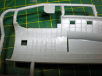
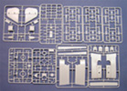

{kind=link}
{kind=link}
{kind=link}
{kind=link}
{kind=link}
{kind=link}
{kind=link}
{kind=link}
{kind=link}


Amodel 1/72 Petlyakov Pe-8
Kit #72142
MSRP $128.98
Images and text Copyright � 2007 by Matt Swan
Developmental Background
Most people don�t think about four engine Russian heavy bombers during the Second World War but they did exist and were easily in the same class as the famous American B-17. Where the Americans cranked out thousands of these heavy bomber the Russians only produced slightly more than 90 of these aircraft. The Russian heavy bomber program began life in 1934 as the ANT-42 and by December of 1936 a prototype was flying. There are a couple of unusual characteristics to this aircraft first being that while it appears to be a four engine bomber it is really a FIVE engine bomber, there is a fifth engine mounted inside the fuselage that feeds air to the four propulsion engines mounted on the wings. Another item of note is the prototype incorporated defensive machine guns in the aft sections of the engine nacelles. These were deleted in production models when the nacelles were redesigned to accommodate radial engines.
This aircraft was of equal performance and capacity to the American B-17 bomber. It had an operational ceiling in excess of 30,000 feet, a maximum speed of about 276 mph and could carry 8,800 pound of bombs. With a crew of eleven it sported only six defensive machine guns but two of them were 20mm turret guns. Originally the type was designed to have four inverted V-12 Mikulin AM-35A liquid cooled engines but production models usually had either Shvetsov M-82FN radial engines or sometimes diesel M-30s or M-40s. None of these later engines provided the performance level that the original V-12s did. The fuselage mounted engine was an M-100 ATsN-2 which acted as a central supercharger. The Russians never had any real plans for strategic bombing which is why this type never saw serious levels of production but the type was used to make nuisance bombing raids on Berlin during the war.
The Pe-8 initially equipped the 432nd special bomber regiment with the 433rd established as a reserve unit. Later the 433rd was reorganized into the 746th and 890th. During the Great patriotic War Pe-8s were used for limited strategic strikes on targets in German-held Eastern Europe and for tactical support during the battles of Stalingrad and Kursk. Probably the most notable service performed by the Pe-8 was the transport of Soviet foreign minister Molotov and his delegation from Moscow to London and Washington DC. During this trip the transport Pe-8 flew through German controlled airspace without incident which was probably just good luck than any credit to the design of the aircraft.
The Kit
Russian manufacture kits are growing in both quality and popularity recently. Amodel has something of a reputation for poor quality castings in many of their earlier releases and I hoped to see improvement in this latest issue. When you as the modeler are asked to shell out in excess of $100 for a plastic kit there is a certain expectation of quality. Upon opening the medium duty cardboard box with vibrant eye catching artwork I could tell there were an abundance of parts inside, especially for a 1/72 scale kit. The initial feel of the parts is not that great as the fingertips read a large degree of roughness but this turns out to be mostly from the exterior edges of the parts. They all have rough edges that do give a slightly false impression. The rest of the part surface is passably smooth with very fine recessed panel lines and rivet detail, so fine that I am concerned it will be obliterated when painted. One thing I have to give Amodel credit for here is the panel lines are actually in scale. For the most part the rough edges are very easy to clean up however we do see this same issue with interior edges like the fuselage windows � each one needs careful clean-up.
The kit contains 33 sprues of medium gray plastic parts that look to be low pressure injection moldings rather than the high pressure moldings we commonly see with the main stream manufactures. The sprue gates are all reminiscent of early Czech model and FM limited run kits. There is a very minor level of flash, no apparent short shots and no visible sink marks. Injector pin markings are minimal and not located in problem areas. 
Parts engineering is a little different that what I normally see and this is most evident in the wing design. The engine nacelles and leading edge area of the wing around them are separate pieces that require careful dry fitting and gluing to install correctly. The plastic is a little on the soft side which lends it to a degree of warpage so gluing pieces like this engine nacelle section in place is a time consuming process, one end must be secured and allowed to cure before the other end can be glued in place. Inside the fuselage Amodel provides an abundance of little parts, all that need careful handling and preparation. We get several interior bulkheads, crew seats and base pieces of equipment. The interior side of the fuselage includes some heavy handed rib-work. This model does have a lot of glazings so you may actually be able to see this interior work when completed.
The kit includes a complete set of bombs and bomb rack however the main Bombay doors are molded in the closed position. If you wish to display the bomb bay open you best dust off your razor saw. Amodel provides 4 sprues of clear parts to cover the many glazings in this aircraft. The clear parts also suffer from that edge roughness we�ve seen in the other parts however just like the other parts it is confined to the edges only. The part proper is nicely thin and demonstrates a reasonably good clarity and will most likely be very acceptable after a treatment in Future. As with most European manufacture kits the primary parts do not have any locator tabs which is not necessarily a bad thing. During test fitting of the fuselage and wing panels I found that the panel lines and edges mated very well. The trailing edge of the wing is very fine, so fine that care will have to be exercised during gluing as to avoid total melt-down. On the negative side that edge roughness comes into play here in that the engraved panel lines disappear for the last millimeter or so approaching the part edge so some scribing will be required. This does not appear to be anything outside the skills of the average modeler.
The kit also includes a small sprue of vinyl parts covering the tires. These were bagged separately from the other parts and it is unknown if they are reactive to the polystyrene in any way yet. Overall we have thirty eight sprues of various parts comprised of eight vinyl tires, forty five clear parts and three hundred ninety five medium gray plastic parts totaling four hundred forty eight parts almost all of which (depending on bomb bay open or closed) will be used in the assembly of this kit. Now not all of these parts are directly related to the aircraft because this kit also includes a nifty little AS-2 Starter Truck that makes for a fine kit all by itself or as a scale reference point to the model aircraft. This kit will certainly keep the modeler busy for a little while.

You may click on the small images above to view larger pictures
Decals and Instructions
Amodel provides us with an extensive instruction packet. We get an A-4 sized pamphlet of twenty four pages that opens with a brief history of the aircraft in English and Russian. There is also a construction symbol key code and paint chart. Three full pages are devoted to parts mapping before we get into actual construction. The next nine pages contain thirty four exploded view assembly steps that all appear well diagramed and include plenty of color call-outs. Five pages are devoted to exterior paint schemes and decal placement for five different aircraft. The last four pages are all focused on assembling and painting the AS-2 Starter truck.
So far we have had an abundance of parts, very detailed and in-depth instructions but the decal seem to fall short. We get a single small sheet of decals that give us two styles of stars and aircraft numbers for the five units shown in the instructions. We get no service stencils or warning markings. Upon careful inspection of the decal sheet it appears that there is hardly any carrier film around the printed material of the decals, the color density looks good and so does print registry. I have not yet had an opportunity to apply any Amodel decals yet so cannot comment on their behavior with setting solutions.
Conclusions
Overall I find this to be a fairly impressive kit. One the plus side of the equation we have a large number of detail parts with very delicate recessed panel lines and rivet detail. Parts fit together fairly well and panel lines mate up correctly. Instructions are very complete and comprehensive. On the negative side we have rough edges on virtually all the parts that will require clean-up, while panel lines are consistent across the main surfaces they disappear right at the edges of the parts and will need to be scribed at all seams. Plastic is slightly softer than other main line kits. While the decals that are provided are good for what they are they lack service markings and stencils. I give this kit a fair to good recommendation and feel it is best suited for modelers of at least medium experience or those who have had experience with limited run kits before.